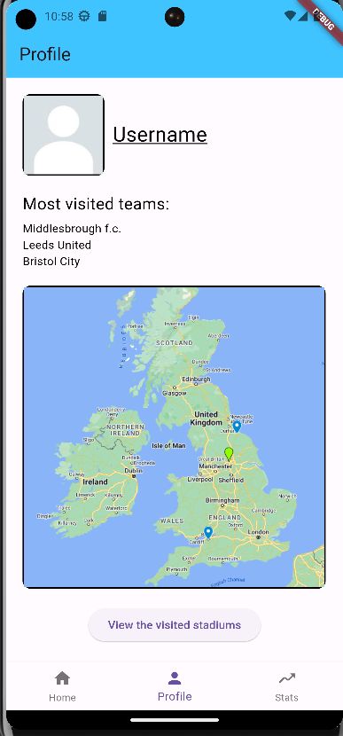

Tyler Hall
Developer • Web Designer • Creator
Hi! I'm a developer passionate about building clean, functional applications. I enjoy web development, Software Development, and AI development.
Projects
Secure Flask Application
Coding in python, I took a vulnerable application and applied my knowledge of OWASP top 10 and CWE top 25 vulnerabilities and mitigated them. The application had a log-in system, where users were given three roles: Moderator, Admin and User. The user can create a new account, change the password of their current account and log out. Some examples include, preventing cross-site scripting and implementing CSRF protection, preventing roles from accessing pages they’re aren’t allowed to view and implementing a secure logging and monitoring system.

Metroidvania-Style Game
This is a metroidvania-style game I created using Unity. It was my first time using C# and the Unity engine.
Football Stadium Checklist
This was my first full application. It tracks stadiums a user has visited and displays progress on Google Maps. It also includes account creation and progress tracking across accounts.
Contact
Email me: tylerhall05.work@gmail.com